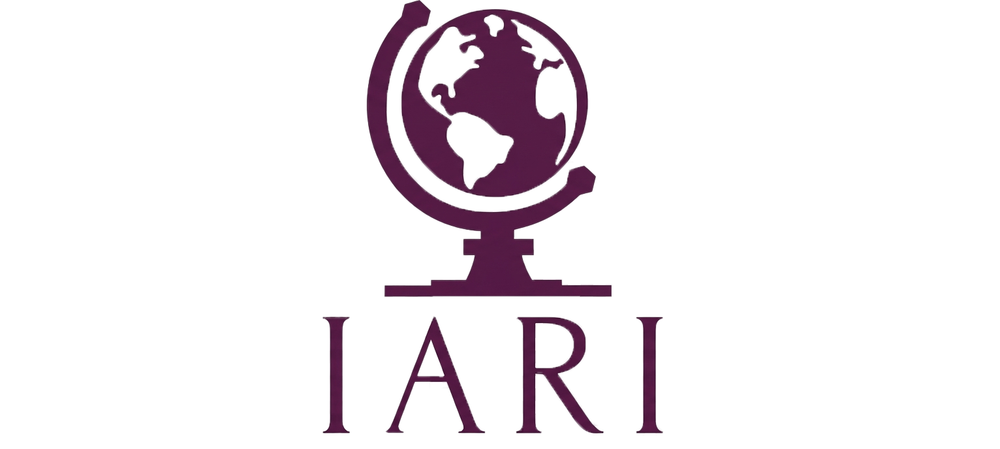

Pubblicazioni
Analisi IARI
Analisi geopolitiche ed economiche pubblicate presso l'Istituto di Analisi delle Relazioni Internazionali. I testi originali sono ospitati su iari.site.
Piano Mattei: cooperazione paritaria e interessi strategici in un'Africa contesa
Il Piano Mattei si inserisce nella ridefinizione della sicurezza energetica italiana, imponendo un riposizionamento dal fronte russo a quello africano, trasformando la necessità di nuovi approvvigionamenti in una proiezione geopolitica. Tramite questo piano Roma punta ad inserirsi nel contesto africano in cui sono presenti i modelli estrattivi di Russia e Cina, offrendosi come alternativa con l'approccio della cooperazione paritaria. La stabilità del progetto dipenderà dalla capacità di convertire la posizione geografica italiana in interdipendenza strutturale per l'Africa. L'assenza di leve coercitive espone l'Italia al rischio di un investimento a fondo perduto privo di ritorno strategico.
Prossimamente su IARIArgentina contesa: litio, riserve e il doppio legame geopolitico
L'analisi delle politiche di Milei rivela una divergenza tra atlantismo ideologico e pragmatismo geopolitico. Nonostante l'Argentina punti al supporto finanziario e militare statunitense per stabilizzare l'economia, rimane vincolata alla Cina per la liquidità degli swap e per gli investimenti in infrastrutture critiche. Sfruttando la propria contendibilità strategica, con grandi riserve di litio ed una posizione atlantica favorevole, il governo prova a massimizzare i benefici economici derivanti dalla triangolazione geopolitica. Questa strategia è messa a rischio da fratture politiche interne e da una possibile separazione forzata che trasformerebbe l'Argentina da soggetto attivo della contesa a terreno di scontro.
Leggi su IARI ↗Dazi USA: la Sezione 122 come strumento di coercizione negoziale
La Sezione 122 del Trade Act del 1974 conferisce al presidente degli Stati Uniti il potere di imporre dazi di emergenza fino al 15% su tutte le importazioni per un periodo di 150 giorni, senza necessità di approvazione congressuale. Storicamente inutilizzata, questa norma è tornata al centro del dibattito come potenziale strumento di pressione nelle trattative commerciali bilaterali. L'analisi esamina la portata giuridica della disposizione, i precedenti storici e le implicazioni strategiche di un suo possibile utilizzo nell'attuale contesto di escalation tariffaria.
Leggi su IARI ↗